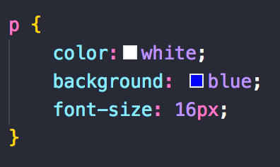
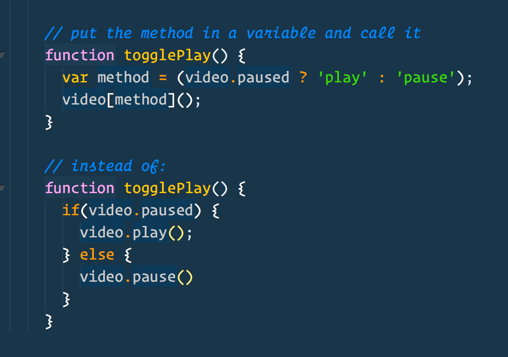

HTML: HyperText Markup Language
HTML is an acronym which stands for Hyper Text Markup Language which is
used for creating web pages and web applications. Let's see what is
meant by Hypertext Markup Language, and Web page. Hyper Text: HyperText
simply means "Text within Text." A text has a link within it, is a
hypertext. Whenever you click on a link which brings you to a new
webpage, you have clicked on a hypertext. HyperText is a way to link two
or more web pages (HTML documents) with each other.
"Hypertext" refers to links that connect web pages to one another,
either within a single website or between websites. Links are a
fundamental aspect of the Web. By uploading content to the Internet and
linking it to pages created by other people, you become an active
participant in the World Wide Web. HTML uses "markup" to annotate text,
images, and other content for display in a Web browser.
Syntax

CSS: Cascading Style Sheets
Cascading Style Sheets (CSS) is a style sheet language used for
describing the presentation of a document written in a markup language
such as HTML or XML (including XML dialects such as SVG, MathML or
XHTML).CSS is a cornerstone technology of the World Wide Web, alongside
HTML and JavaScript.
is designed to enable the separation of presentation and content,
including layout, colors, and fonts.This separation can improve content
accessibility; provide more flexibility and control in the specification
of presentation characteristics; enable multiple web pages to share
formatting by specifying the relevant CSS in a separate . css file,
which reduces complexity and repetition in the structural content; and
enable the . css file to be cached to improve the page load speed
between the pages that share the file and its formatting.
Syntax

JavaScript
Javascript (JS) is a scripting languages, primarily used on the Web. It
is used to enhance HTML pages and is commonly found embedded in HTML
code. JavaScript is an interpreted language. Thus, it doesn't need to be
compiled. JavaScript renders web pages in an interactive and dynamic
fashion. This allowing the pages to react to events, exhibit special
effects, accept variable text, validate data, create cookies, detect a
user’s browser, etc.
Syntax
